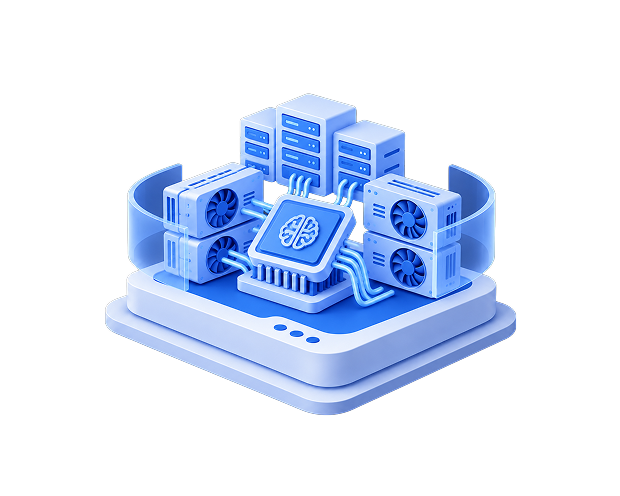

Resources.
Infrastructure Thinking for Production Systems.
Infrastructure Thinking for Production Systems.
Infrastructure decisions affect performance, security, availability, scalability and operational responsibility.
Crafthost Resources provides practical technical and strategic guidance for organizations designing, operating, securing and evolving production-critical infrastructure.
Our perspective is grounded in infrastructure engineering, managed operations and operational accountability. The objective is not simply to explain technologies, but to help organizations understand how infrastructure choices affect architecture, risk, day-to-day operations and long-term responsibility.
Explore technical implementation guidance, infrastructure planning resources, engineering perspectives and focused sessions designed to support better infrastructure decisions.
Explore Crafthost Resources:
Practical Technical Guidance for Infrastructure Teams.
Detailed technical resources for engineers, administrators and technical decision-makers working with production infrastructure.
Focus areas include:
Use Technical Guides when you need implementation-oriented detail.
Explore Technical GuidesClear Guidance for Infrastructure Planning.
Crafthost Guides help organizations evaluate infrastructure options, operational models and architecture decisions without unnecessary complexity.
Key topics include:
Use Guides when evaluating options or preparing for discussions with engineering teams.
Browse GuidesInfrastructure Engineering, Operations & Strategy.
The Crafthost Blog examines developments and practical considerations that affect modern production infrastructure.
Coverage includes:
The focus is not technology news for its own sake, but what developments mean for organizations running important workloads—and how infrastructure strategy and operations may need to respond.
Read the BlogInfrastructure Knowledge from Engineers and Specialists.
Focused sessions on infrastructure architecture, security, operations and emerging requirements.
Typical subjects include:
Webinars turn complex subjects into practical technical and operational decisions.
View WebinarFind Resources Relevant to Your Environment.
Crafthost resources span the complete infrastructure lifecycle—from architecture and deployment through security, operations, optimization and migration.
Cloud architecture, managed operations, capacity, performance and lifecycle management.
Managed Cloud VPSDedicated environments, workload isolation, performance, hardware resources and managed operations.
Managed Dedicated ServersArchitectures built for greater control, isolation, governance and multi-environment integration.
Hardening, access governance, monitoring, vulnerability management, resilience and operational security.
Security & ComplianceArchitecture, security, testing, cutover and operational-transition planning.
Migration ServicesInfrastructure considerations for GPU workloads, machine learning, AI applications and high-performance computing.
GPU & AI ServersConnectivity, location, latency, resilience and multi-region architecture.

Turn Technical Knowledge into Better Architecture. Useful infrastructure content should support real decisions.
Crafthost Resources helps organizations evaluate questions such as:
These decisions affect more than technology selection.
They influence operational risk, staffing requirements, security, availability, performance and long-term infrastructure complexity. Crafthost approaches these questions from the perspective of both infrastructure engineering and ongoing operational responsibility.
Infrastructure decisions rarely belong to one team.
Crafthost Resources is designed for:
Infrastructure engineers.
Systems administrators.
DevOps and platform teams.
Security teams.
IT leadership.
CTOs and technical executives.
Procurement teams.
Risk and governance functions.
Technical teams need implementation depth.
Technology and business leaders need clarity around architecture, risk, performance, responsibility and operational impact. Crafthost Resources connects those perspectives so infrastructure decisions can be evaluated both technically and operationally.
Visit the Crafthost Knowledge Base.
For service documentation, operational guidance and service-specific technical information, visit the Crafthost Knowledge Base.
Visit the Knowledge Base